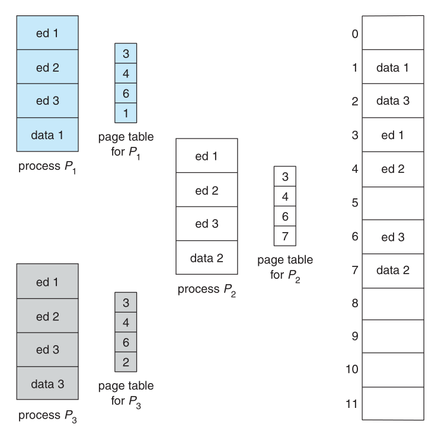
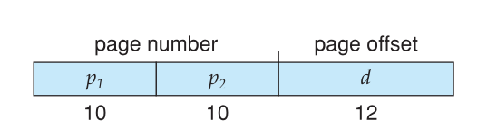
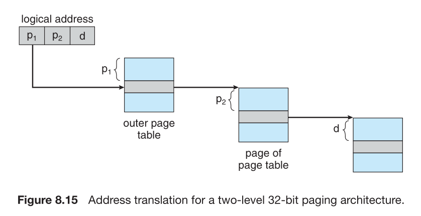
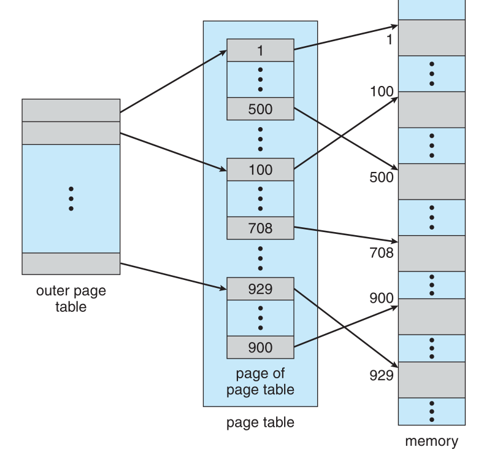

To be executed, the program must be brought into
memory and placed within a process.
A compiler will typically bind these symbolic addresses to
relocatable addresses.
Classically, the binding of instructions and
data to memory addresses can be done at any
step along the way.
Compile time
If you know at comile time where the process will
reside in memory, then absolute code can be generated.
If the starting location changes, then it will be necessary
to recompile this code.
Load time
If it is not known at compile time where the process
will reside in memory, then the compiler must generate
relocatable code.
Execution time
If the process can be moved during its execution from one
memory segment to another, then binding must be delayed until//
run time.
Special hardware must be available for this scheme to work.
Logical address
An address generated by the CPU.
Whereas an address is commonly referred to as
a physical address.
We usually refer to the logical address as a virtual address.
The set of all logical addresses generated by a program
is a logical address space.
The set of all physical addresses corresponding to these
logical addresses is a physical address space.
Thus, in the execution-time address-binding scheme, the
logical and physical address spaces differ.
Memory-management unit (MMU)
The run-time mapping from virtual to
physical addresses is done by a hardware device.
The base register is now called a relocation register.
The value in the relocation registere is added to
every address generated by a user process at the time
the address is sent to memory.
Dynamic Loading
To obtain better memory-space utilization.
With dynamic loading, a routine is not loaded
until it is called.
The main program is loaded into memory and is executed.
Dynamic Linking and Shared Libraries
Dynamic linking is similar to dynamic loading.
Linking,rather than loading, is postpoined until
execution time.
如果系統中欲執行的程式都須載入主記憶體並連結，會浪費主記憶體，
採用動態連結(Dynamic linking)時，在執行程式碼中要保留
所引用程式庫的索引(Stub)。
索引是一小段的程式碼，用以指示如何找到駐存在記憶體裡的程式。
當執行到這一段索引(Stub)碼時，這段索引碼會把自己代換成真正
欲執行的程式庫位址，並跳到那個位址去執行，下次程式執行
到這個索引碼時，不需要再進行動態連結，就可以直接執行
程式庫。
Swapping
A process can be swapped temporarily out of memory to
a backing store and then brought back into memory for
continued execution.
在以優先權為基礎的演算法上，若有一個較高優先權的處理程序到達
並要求服務時，為了載入並執行較高優先權的處理程序執行完成後，
再換回較低優先權的處理程序，則會先把低優先權的程序Swap out。
當Memory有空時，再Swap in較低優先權的處理程序繼續執行。
稱為Roll-In/Roll-Out。
The main memory must accommodate both the
operating system and the various user processes.
作業系統可以放置在低位址的記憶體空間或高位址記憶體空間，
因為中斷向量通常都位於較低位址空間，所以作業系統通常也
放在較低的位址空間。
Memory Mapping an Protection
We can provide these features by using a relocation
register to gether with a limit register.
With relocation and limit registers, each logical address
must be less than the limit register.
The MMU maps the logical address dynamically by adding the
value in the relocation register.
If a device driver is not commonly used, we do not want to
keep the code and data in memory, as we might be able to
use that space for other purposes.
Such code is sometimes called transient(暫態)
operating-system code.
An 80-percent hit ratio, for example, means that we find
the desired page number in the TLB 80 percent of the
time. If it takes 20 nanoseconds to search the TLB and
100 nanoseconds to access memory, then a mapped-memory
access takes 120 nanoseconds when the page number is
in the TLB. If we fail to find the page number in the TLB
(20 nanoseconds), then we must first access memory for the
page table and frame number (100 nanoseconds) and then access
the desired byte in memory(100 nanoseconds), for a total of
220 nanoseconds. To find the
effective memory-access time, we weight the
case by its probability:
effective access time=
\(
0.80\times(20+100)+0.20\times(20+100+100)
\)
\(
=140
\) nanoseconds.
Shared Pages
可重入式程式碼(Pure Code)，減少記憶體使用。

Page Struture
1. MultiLevel paging
Also called "forward-mapped page table"
\(
p_1 =
\) outer page table
\(
p_2 =
\) offset of outer page.


